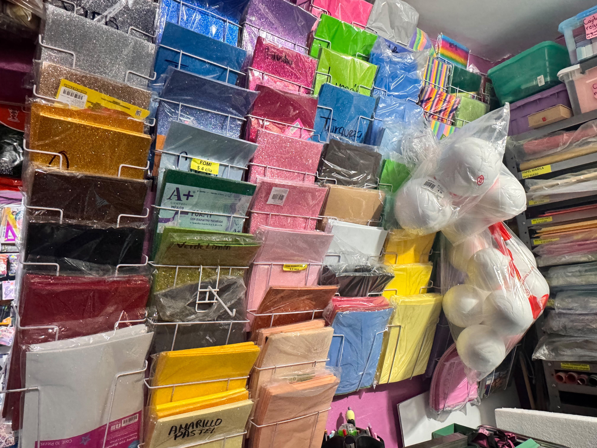
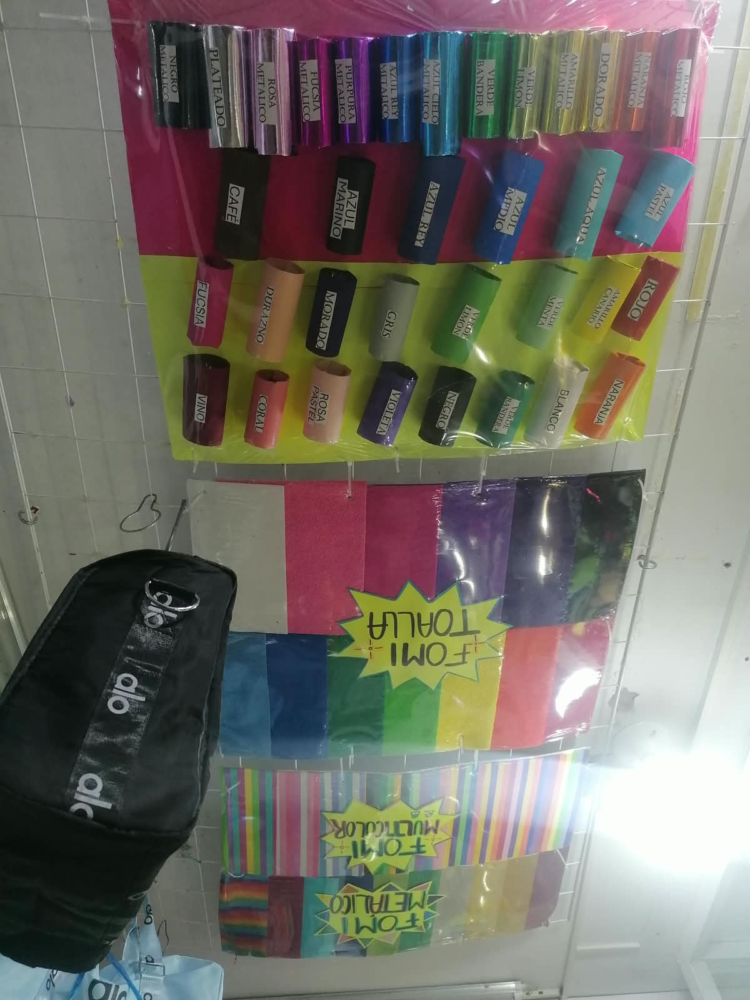
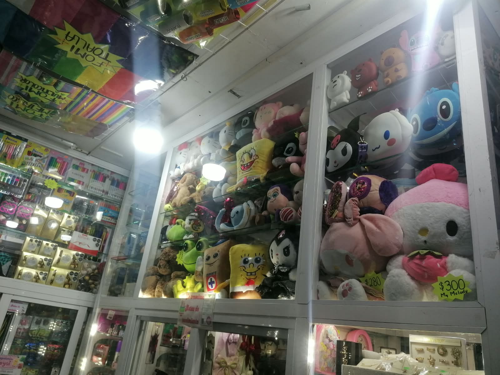
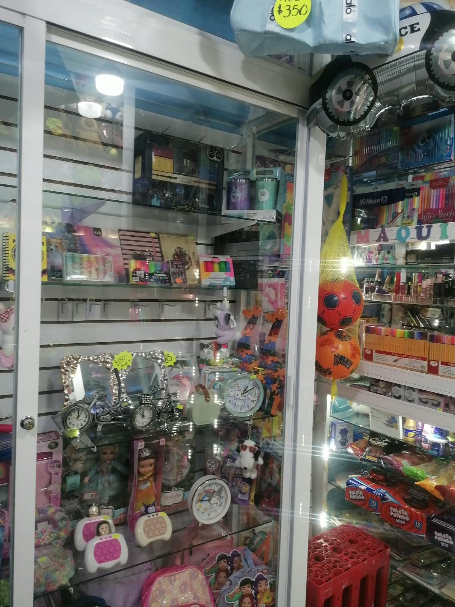
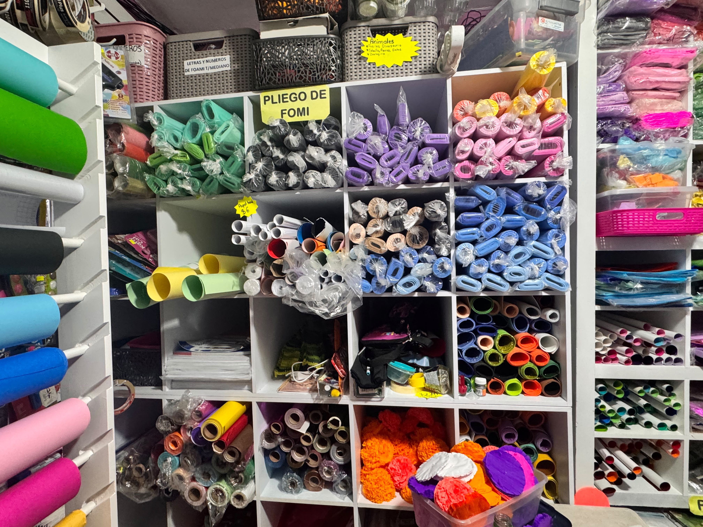
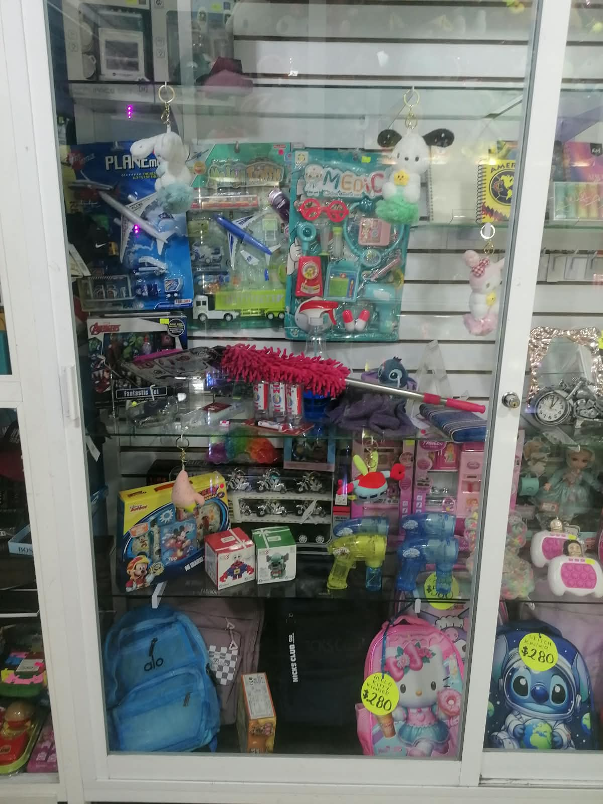

En Papelería Yayoi encontrarás todo lo que necesitas para estudiar, trabajar y dejar
volar tu creatividad. Ofrecemos útiles escolares, artículos de oficina y
materiales para manualidades, siempre buscando brindarte buenos productos y una
atención amable.
Somos Papelería Yayoi, un negocio dedicado a ofrecer productos escolares,
artículos de oficina y materiales de arte. Nuestro propósito es
ayudar a estudiantes, maestros y personas en general a encontrar todo lo
que necesitan en un solo lugar, ofreciendo variedad, calidad y buenos precios.
Brindar a nuestros clientes una amplia variedad de artículos de papelería,
materiales escolares y productos de oficina, ofreciendo calidad, precios justos y una atención cordial.
Nuestro propósito es facilitar las actividades escolares y laborales,
proporcionando productos que satisfagan las necesidades de estudiantes, maestros y familias,
creando un ambiente de confianza y buen servicio.
Ser una papelería reconocida y preferida por los clientes gracias a nuestra variedad de productos,
precios competitivos y excelente servicio.
Buscamos crecer como negocio, mejorar constantemente nuestros productos y servicios,
incorporar nuevos artículos y mantenernos actualizados con las necesidades de nuestros clientes.
A futuro, queremos ampliar nuestro alcance,
atraer a más personas y convertirnos en un establecimiento de confianza que contribuya al aprendizaje,
la educación y el desarrollo de nuestra comunidad.
los produvtos que ofrece nuestra papeleria yayoi son:
*Cuadernos y libretas.
*Lápices, plumas y colores.
*Borradores y sacapuntas.
*Reglas, tijeras y pegamento.
*Hojas blancas y de colores.
*Cartulinas y papel crepé.
*Marcadores y resaltadores.
*Carpetas y folders.
*Materiales para manualidades.
*Mochilas y artículos escolares.
*Peluches juguetes
*Maquillaje perfumes






En papeleria yayoi nos interesa brindar productos y atencion de calidad
a todas las personas que nos visitan.
Encuentran útiles escolares y materiales
para sus tareas y proyectos.
Encuentran materiales para sus clases
y actividades escolares.
Pueden encontrar artículos escolares
y materiales para diferentes actividades.